Linked memory allocation¶
Links¶
Link objects¶
Our discussion starts with Link, a tiny class that is included by default in a fresh image and has been defined as
Object subclass: #Link
instanceVariableNames: 'nextLink'
classVariableNames: ''
package: 'Collections-Support-Links'
"An instance of me is a simple record of a pointer to another Link. I am an abstract class; my concrete subclasses, for example, Process, can be stored in a LinkedList structure."
The simplest Link object is
"CTLinkedStorageLinkTest, protocol tests"
testEmptyLink
| l |
l := Link new.
^ self exportSlotsGraphOf: l
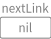
Although we can use a Link to point to an arbitrary object, implicity nil in
the previous test case and explicity 3 in the following one,
"CTLinkedStorageLinkTest, protocol tests"
testLinkReferencingThree
| l |
l := Link new.
l nextLink: 3.
^ self exportSlotsGraphOf: l
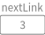
a Link is designed for referencing a Link object, either a new one
"CTLinkedStorageLinkTest, protocol tests"
testLinkReferencingAnotherLink
| l1 l2 |
l1 := Link new.
l2 := Link new.
l1 nextLink: l2.
^ self exportSlotsGraphOf: l1
or possibly itself
"CTLinkedStorageLinkTest, protocol tests"
testLinkReferencingItself
| l |
l := Link new.
l nextLink: l.
^ self exportSlotsGraphOf: l
The previous two representations look the same but in memory are completely
different structures. To see this, we unroll the representation for the Link
objects that are recursively referenced via the nextLink slot so that
both the usual structure
"CTLinkedStorageLinkTest, protocol tests"
testLinkReferencingAnotherLinkRecursive
| l1 l2 |
l1 := Link new.
l2 := Link new.
l1 nextLink: l2.
^ self exportSlotsGraphRecursiveOf: l1
and the loop structure
"CTLinkedStorageLinkTest, protocol tests"
testLinkReferencingItselfRecursive
| l |
l := Link new.
l nextLink: l.
^ self exportSlotsGraphRecursiveOf: l
are correcly drawn and the difference is now clear. From now on we will use the recursive representation in order to have the big picture of the structures allocated in memory, so a combination of what we have seen so far looks as follows
"CTLinkedStorageLinkTest, protocol tests"
testTwoLinksReferencingEachOtherRecursive
| l1 l2 l3 |
l1 := Link new.
l2 := Link new.
l3 := Link new.
l1 nextLink: l2.
l2 nextLink: l3.
l3 nextLink: l1.
^ self exportSlotsGraphRecursiveOf: l1
ValueLink objects¶
With the addition of the value slot to the Link class we obtain the
ValueLink class, precisely
Link subclass: #ValueLink
instanceVariableNames: 'value'
classVariableNames: ''
package: 'Collections-Support-Links'
"A ValueLink is a Link containing a Value.
Adding an object to a LinkedList which is not a Link will create a ValueLink containing that object.
value - The object this link points to."
and the binary message
"Object, protocol associating"
~~> aValueLinkOrNil
"Answer a ValueLink between self and aValueLinkOrNil.
This message allows the receiver to be inserted in a chain of objects, terminated by nil."
"Code of ValueLink>>#nextLink: and ValueLink>>#value: are inline here for speed."
"(1 ~~> nil) = ValueLink new value: 1"
"(1 ~~> 'one') value >>> 1"
"(1 ~~> nil) nextLink >>> nil"
"Note that `value` can be ANY object; on the other hand, `nextLink` should be either another
ValueLink object or nil."
^ ValueLink basicNew
value: self;
nextLink: aValueLinkOrNil;
yourself
allows us to build a simple ValueLink as
"CTLinkedStorageValueLinkTest, protocol tests"
testSimpleValueLink
| l |
l := 1 ~~> nil.
^ self exportSlotsGraphOf: l
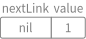
Of course, we can compose the application of #~~> to build an arbitrary long chain as
"CTLinkedStorageValueLinkTest, protocol tests"
test21ValueLinks
| l |
l := 2 ~~> self testSimpleValueLink.
^ self exportSlotsGraphOf: l

"CTLinkedStorageValueLinkTest, protocol tests"
test321ValueLinks
| l |
l := 3 ~~> self test21ValueLinks.
^ self exportSlotsGraphOf: l
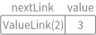
"CTLinkedStorageValueLinkTest, protocol tests"
test4321ValueLinks
| l |
l := 4 ~~> self test321ValueLinks.
^ self exportSlotsGraphOf: l
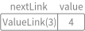
Moreover, using the recursive representation we can have a look at all of them in one shot
"CTLinkedStorageValueLinkTest, protocol tests"
test4321ValueLinksRecursive
^ self exportSlotsGraphRecursiveOf: self test4321ValueLinks
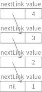
and in a simpler form
"CTLinkedStorageValueLinkTest, protocol tests"
test4321ValueLinksSimplerRepr
^ self
export: self test4321ValueLinks
pathSuffix: ''
selector: #gtInspectorLinksUsingCanvas:
As we have seen for Link objects, we can build a loop with ValueLink
objects too, both implicitly
"CTLinkedStorageValueLinkTest, protocol tests"
test11ValueLinksLoop
| l |
l := 1 ~~> nil.
l nextLink: l.
^ self exportSlotsGraphOf: l

and explicitly
"CTLinkedStorageValueLinkTest, protocol tests"
test11ValueLinksLoopRecursive
^ self exportSlotsGraphRecursiveOf: self test11ValueLinksLoop
Finally, a combination of the constructions given before looks as follows
"CTLinkedStorageValueLinkTest, protocol tests"
test43214ValueLinksRecursive
| l1 l |
l1 := 1 ~~> nil.
l := 4 ~~> (3 ~~> (2 ~~> l1)).
l1 nextLink: l.
^ self exportSlotsGraphRecursiveOf: l
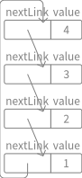
and since we are in a loop, we can just skip a few times to get a different but equivalent representation
"CTLinkedStorageValueLinkTest, protocol tests"
test43214ValueLinksFrom2Recursive
^ self exportSlotsGraphRecursiveOf:
self test43214ValueLinksRecursive nextLink nextLink
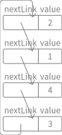
Containers¶
LinkedList objects¶
ValueLink objects are small and allow us to compose them in an applicative
way so that we can share part of a composite structure among different client
objects so that those clients don’t observe any side effect on the
ValueLink objects they are currently referencing.
By the way, some applications prefer to have a manager object that handles those links as a whole, hiding the inner machinery that keeps their structure sound. Those managers are called containers.
A ValueLink understands the #asLinkedList message to enclose itself in
a LinkedList container
"CTLinkedStorageValueLinkTest, protocol tests"
testAsLinkedList
^ self exportSlotsGraphOf: self testSimpleValueLink asLinkedList
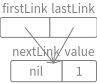where
"ValueLink, protocol *Collections-Support-Extensions" asLinkedList | list | list := LinkedList empty. self do: [ :each | list addLast: each value ]. ^ listwhere
"Link, protocol *Collections-Support-Extensions" do: aBlock | link | link := self. [ link ] whileNotNil: [ aBlock value: link. link := link nextLink. link == self ifTrue: [ link := nil ] ]
Two observations are in order:
On one hand, since the slot
nextLinkhosts either aLinkornilthen the latter has to understand"UndefinedObject, protocol *Kernel-Extensions" asLinkedList ^ LinkedList empty
too and it behaves as follows
"CTLinkedStorageValueLinkTest, protocol tests" testNilAsLinkedList ^ self exportSlotsGraphOf: nil asLinkedList

On the other hand, since a
ValueLinkcould keep a recursive structure then all the values are kept as well"CTLinkedStorageValueLinkTest, protocol tests" testAsLinkedList4321 ^ self exportSlotsGraphOf: self test4321ValueLinks asLinkedList
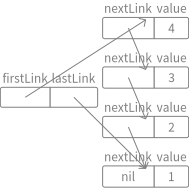
Additionally, LinkedList objects can be built using other objects than
ValueLink ones, for example sending #as: to an Interval
"CTLinkedStorageValueLinkTest, protocol tests"
testAsLinkedListFromInterval
^ self exportSlotsGraphOf: ((1 to: 10) as: LinkedList)
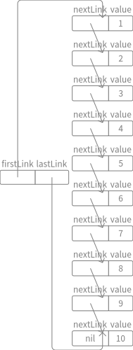
Moreover, from a SequenceableCollection we can revert back to a ValueLink with
"CTLinkedStorageValueLinkTest, protocol tests"
testAsValueLink
^ self exportSlotsGraphOf: (1 to: 10) asValueLink
where
"SequenceableCollection, protocol *Collections-Sequenceable-Extensions" asValueLink ^ self foldr: #~~> init: nilwhere
"SequenceableCollection, protocol *Collections-Sequenceable-Extensions" foldr: aBlock init: init | cell | cell := init. self reverseDo: [ :each | cell := aBlock value: each value: cell ]. ^ cell
Using another folding message #inject:into:, defined as
"Collection, protocol enumerating"
inject: thisValue into: binaryBlock
"Accumulate a running value associated with evaluating the argument, binaryBlock, with the current value of the argument, thisValue, and the receiver as block arguments."
"( #(1 2 3) inject: 0 into: [ :sum :each | sum + each ] ) >>> 6"
| nextValue |
nextValue := thisValue.
self do: [ :each |
nextValue := binaryBlock value: nextValue value: each ].
^ nextValue
we obtain a reversed ValueLink
"CTLinkedStorageValueLinkTest, protocol tests"
testAsValueLinkInjectInto
| l |
l := (1 to: 10)
inject: nil
into: [ :aValueLink :each | each ~~> aValueLink ].
^ self exportSlotsGraphRecursiveOf: l

Finally, the definition and class comment of LinkedList follows
SequenceableCollection subclass: #LinkedList
instanceVariableNames: 'firstLink lastLink'
classVariableNames: ''
package: 'Collections-Sequenceable-Base'
I am a sequential collection where adjecent objects are linked.
I can store any kind of objects that I will wrap into a Link (See implementation points).
I act pretty much as an OrderedCollection, but my access times differs: the method #atIndex: is depending of the number of elements so is not constant. In the worse case, the whole list must be crossed.
Using the message #addFirst: / #removeLast causes the receiver to behave as a stack; using #addLast: / #removeFirst causes the receiver to behave as a queue.
I use the Link class (or his subclasses) in my implementation.
### Public API and Key Messages
- #new / #withAll: aCollection / #with: anObject are common constructors
- #add: anObject / #at: anIndex put: anObject allow to add new elements to myself.
- #remove: anObject allow to remove an element.
- #do: aBlock / #collect: aBlock / #select: aBlock / #reject: aBlock are common iterators.
### Example
"There is many ways to create a LinkedList, here are some:"
```
linkedList := LinkedList new.
linkedList
add: 'one';
add: 'two';
addFirst: 'zero';
addLast: 'three'.
linkedList. "returns: a LinkedList('zero' 'one' 'two' 'three')"
"or"
linkedList := LinkedList with: 'one' with: 'two' with: 'three'.
linkedList. "returns: a LinkedList('one' 'two' 'three')"
"or from an other collection (here an Array)"
linkedList := LinkedList withAll: #('one' 'two' 'three').
linkedList. "returns: a LinkedList('one' 'two' 'three')"
"Some manipulations"
linkedList := LinkedList new.
linkedList
add: 1;
add: 2.
linkedList. "returns: a LinkedList(1 2)"
linkedList remove: 1.
linkedList. "returns: a LinkedList(2)"
"A last one"
linkedList := LinkedList with: $b with: $c with: $a.
linkedList sort: [ :first :second | first < second ]. "returns: a LinkedList($a $b $c)"
linkedList collect: [ :element | element asUppercase ]. "returns: a LinkedList($A $B $C)"
linkedList select: [ :element | element >= $b ]. "returns: a LinkedList($b $c)"
linkedList do: [ :element | element inspect ].
linkedList asArray "returns: #($a $b $c)"
```
### Internal Representation and Key Implementation Points.
Instance Variables
- firstLink: <Link> A link that contains the first value of the LinkedList.
- lastLink: <Link> A link that contains the last value of the LinkedList.
If you attempt to add any object into a LinkedList that is not a Link, it will automatically be wrapped by a ValueLink.
respectively.